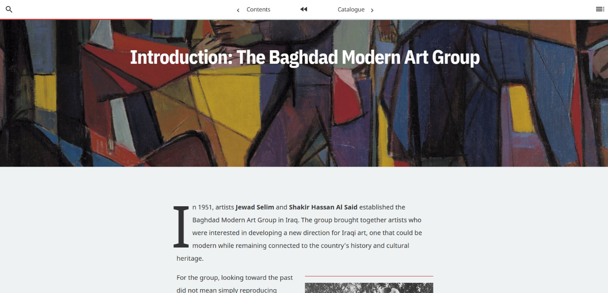
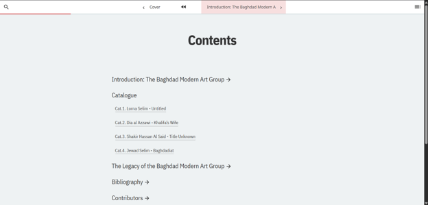
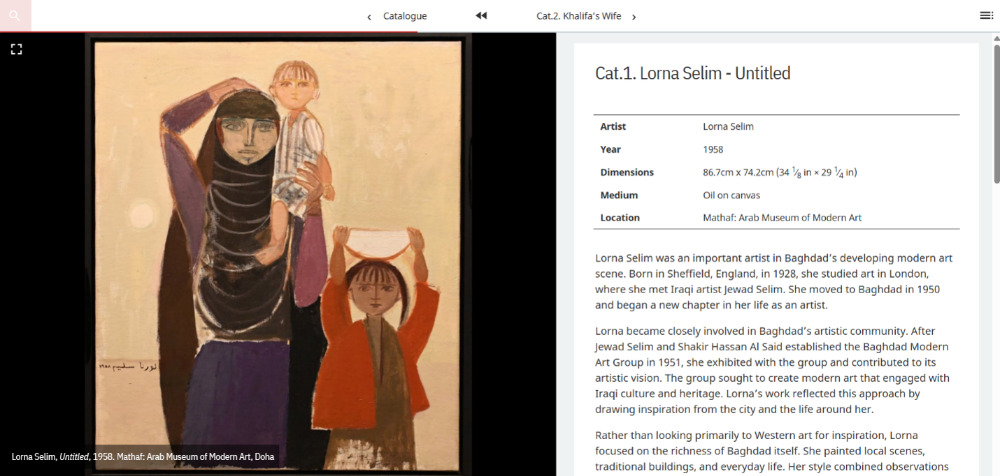
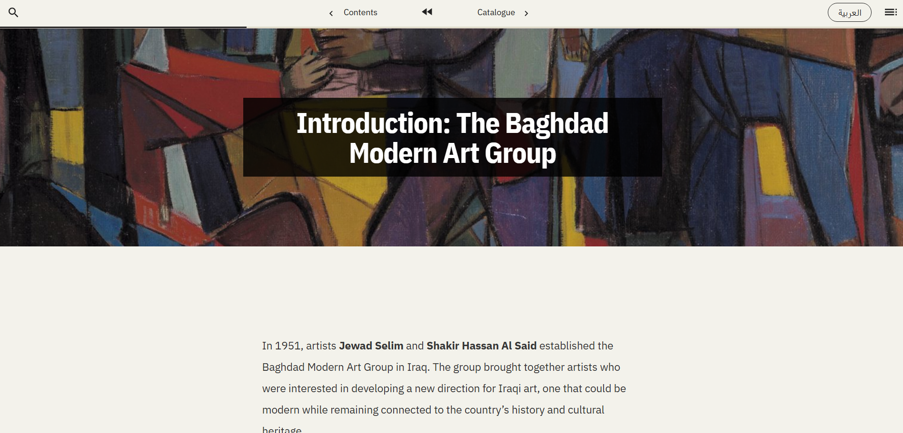
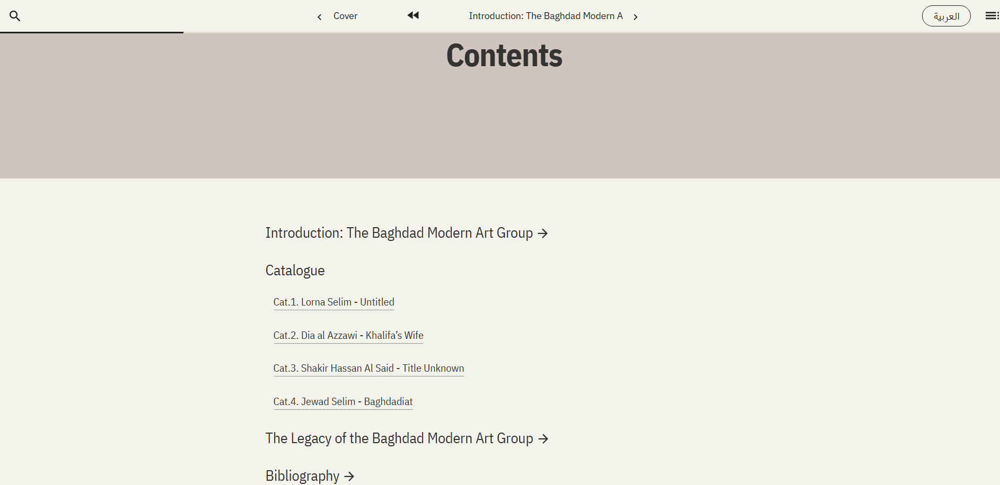
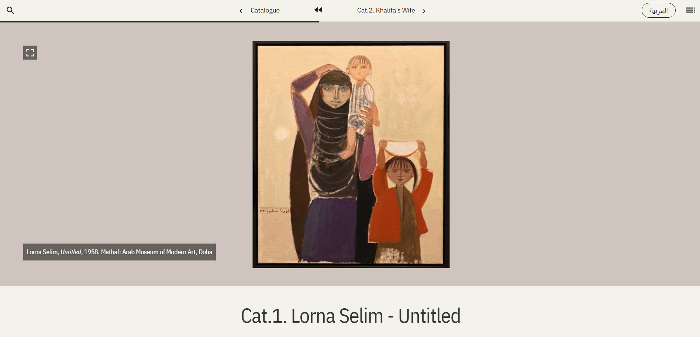
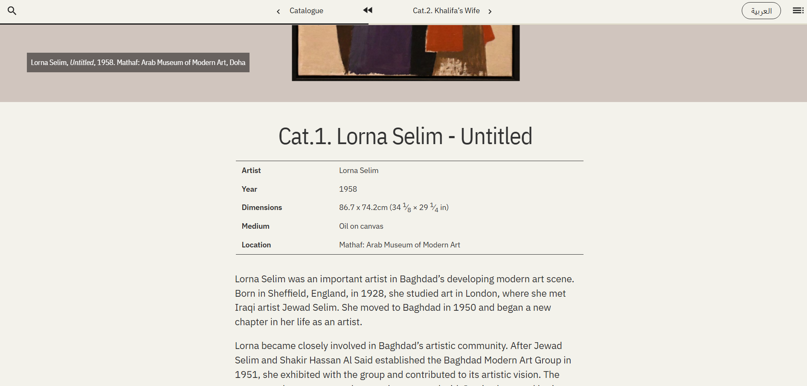

This week, I got to try another new tool which is the Getty’s Quire platform. It allows you to publish a publication as a web page, a PDF, and a downloadable e-book all at once. I had never heard of Quire before, hence I spent some time searching and reading about it to understand how it works.
When I downloaded the tool, I didn’t expect it to have so many folders and files. Whenever I work with an open-source project, I prefer to gain a general understanding of how everything works and is structured, not every file and folder because this will take a long time but enough to know how to modify the code as I want.
I decided to reuse the content I gathered for my audio guide, but the content was short which is suitable for audio guide not a website, so I had to expand the content to fit it for the website. I started with the English version first, collecting information from the Mathaf exhibition pages and individual artist biographies pages which was rich of information of the artist life through different eras, their vision of art, and careers.
Understanding the project structure early on paid off when replacing the default template content. In Quire, figures and objects are stored in YAML files and called directly inside the Markdown files, which made updating the images, logos, and text much easier.
Next, I translated the English content to Arabic content because I wanted the website to have both languages and allow the user to choose their preferred language. The problem when switching from Arabic to English language in any website is dealing with text layout and directionality. In English you read left-to-right while in Arabic you read right-to-left. When switching languages, I had to ensure the whole website is also adjusting to the language, not only the text, but also the arrows directions and component motion.
Each file contains every text twice, once in English and once in Arabic, each labelled with its language. When a page opens, the website decides which language to show based on the url parameter for a language setting (?lang=ar); if there isn't one, it checks the choice saved in the browser's localStorage; if there's nothing saved, it uses English. It then marks the page with that language, and the CSS hides the text of the other language.
Once the content was set up in both languages, I moved on to styling. The default template came with a faded grey design read.



I replaced it with Mathaf’s brand colors. For typography, I used IBM Plex Sans for English and IBM Plex Sans Arabic for Arabic, which are both clean and easy to




Overall, I really enjoyed working with Quire. It’s a useful tool for creating multi-format publications, and it’s very easy to customize the colors, styles, and content once you understand how the project is organized.